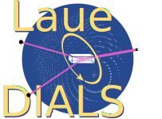

laue_dials.version
Introduction
Prints version information for Laue-DIALS and DIALS.
Examples:
laue.version

laue_dials
Navigation
Contributions & Help
License
Authors
Changelog
Contents
Indices and tables
Command-Line Reference
laue_dials.version
Introduction
laue_dials.find_spots
laue_dials.index
laue_dials.sequence_to_stills
laue_dials.optimize_indexing
laue_dials.refine
laue_dials.predict
laue_dials.integrate
laue_dials.plot_wavelengths
laue_dials.compute_rmsds
Full API Reference
Jupyter Tutorials
Related Topics
Documentation overview
Functions
Previous:
Functions
Next:
laue_dials.find_spots